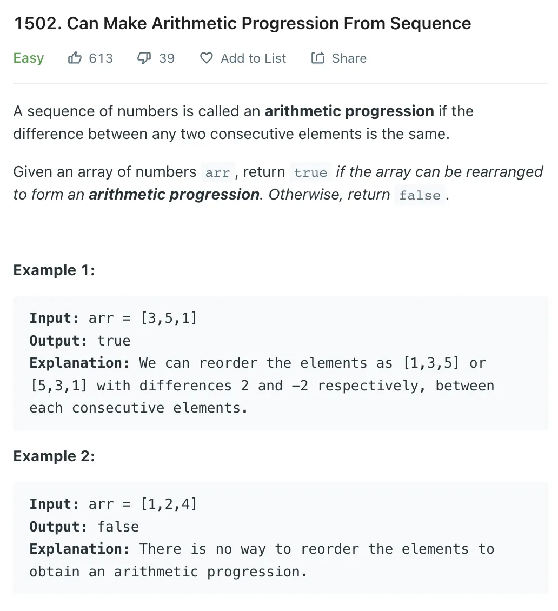
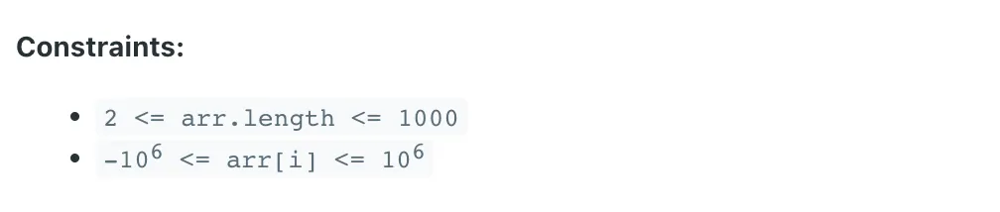

1502. Can Make Arithmetic Progression From Sequence
Question


✍🏽 My Solution
Runtime: 3 ms, faster than 49.23% of Java online submissions for Can Make Arithmetic Progression From Sequence.
Memory Usage: 42.7 MB, less than 34.25% of Java online submissions for Can Make Arithmetic Progression From Sequence.
class Solution {
public boolean canMakeArithmeticProgression(int[] arr) {
Arrays.sort(arr);
for (int i = 1; i < arr.length-1; i++) {
if (arr[i] - arr[i-1] != arr[i+1] - arr[i]) {
return false;
}
}
return true;
}
}
🧠 Thought Process
- Why did I choose this particular implementation?
- 先將陣列排序，計算index i 跟 i+1的差
- 遍歷陣列所有的差是不是都相等，遇到不相等return false
-
What is the time/space complexity of my solution? How do I know?
-
time: $O(nlogn)$
排序的时间代价为
O(nlogn)，遍历序列的时间代价是O(n)，故渐进时间复杂度为 O(nlogn + n) = $O(nlogn)$。 -
space: $O(logn)$。快速排序的空間複雜度為O(logn)
- Java的Arrays.sort()方法到底用的什么排序算法
- What mistakes did I make?
- 沒考慮到數組還沒排序，後來才想到要先排序
- What can I do next time to make sure I don't make the same mistakes again?
- 再多看一下input
-
Solution # [technique]